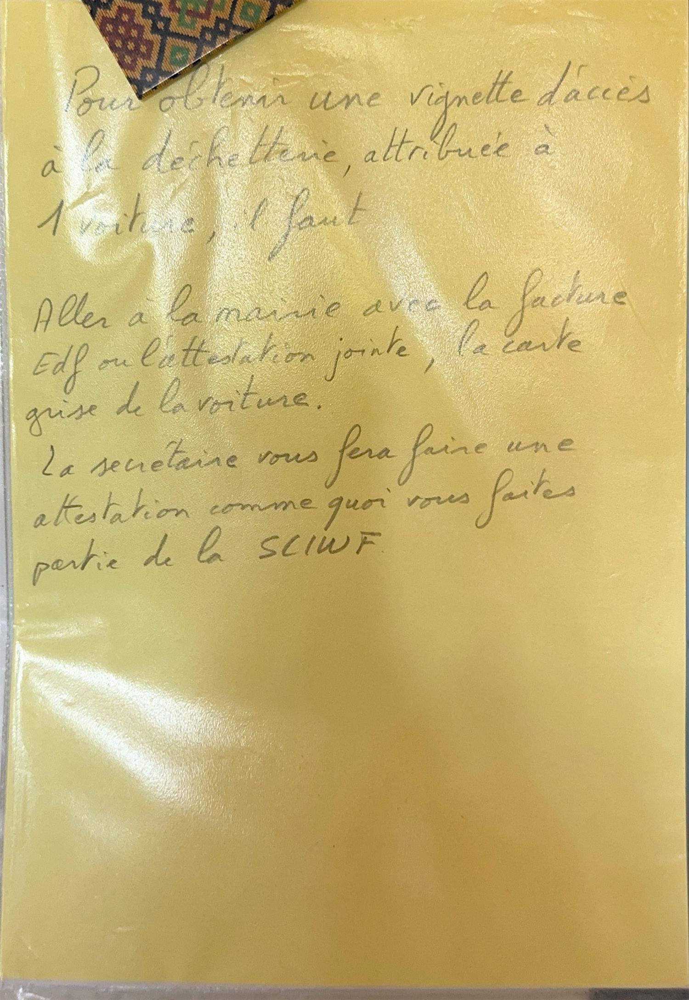

À savoir : l'accès à la déchetterie communale se fait avec une vignette, attribuée à une seule voiture. Il faut donc la demander pour le véhicule que vous utiliserez.
Démarche Obtenir la vignette
- Rendez-vous à la mairie.
- Présentez une facture EDF — ou l'attestation jointe au dossier de la maison.
- Présentez la carte grise du véhicule concerné.
- La secrétaire établit une attestation certifiant que vous faites partie de la SCI propriétaire, et vous remet la vignette.
Pense-bête À emporter
- 🧾 Facture EDF ou attestation du dossier
- 🚗 Carte grise de la voiture
📷 Voir la note originale
